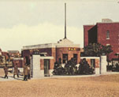

呂清夫 撰文

少人反對國中有放牛班，然而高中就沒有嗎？每當高中聯考放榜之時，就會出現各種等級的分發，分發剩下的就是落榜的一群。落榜者再參加另一波的聯考，又是一次的分發……，最後落榜的則由某些學校照單全收。這種分發不是比國中的編班更仔細、更人為嗎？可是就沒有人說話，這裡面難道沒有放牛班嗎？我看不但有，而且自「小放牛」到「大放牛」，都應有盡有﹗高中聯考得意的人常有一種優越感，我便碰過這麼一種學生，當他們談起台北某些學校時，竟會稱之為「四方」中學，同時臉上還露出某種神祕的微笑，我起先莫名所以，但是他們則說，「四方」也者，東方、西湖、開南、泰北之類是也！這實在有點「種族」歧視，對雙方學生、對整個社會，想來都不是好事。國中的放牛班大約佔全部學生的七成以上，高職與高中的比例則多達七比三，這個分量未免太大。反之，準備升學的學生則在國中編班篩過一次，高中聯考再篩一次，大學聯考又篩一次，篩來篩去，弄得我們的大學人口只佔全人口的百分之二，比韓國的百分之三．六還少得多，擁抱大學竟是如此痛苦，這是教育的平等嗎？德國人會說：「中學畢業生欲受高等教育，乃是理所當然的權利。」這應是當今世界的教育潮流。四年前，在日本的一次國際教育研討會中，英、法、西德、瑞典、美國的學者都有一個共識，那就是隨著經濟的高度成長，教育水平也要水漲船高。這一來，職業學校便要面臨淘汰，因為大家都要接受可以升學的高中教育。不過，當時很沒面子的是日本，因為在這種世界潮流中，號稱經濟大國的日本，其高職和高中的比例居然還是三比七，情況雖比台灣好很多，卻被與會學者譏為「世界罕見的偉大實驗」（見一九八五年十月十九日朝日新聞），換言之，日本在後工業時代中，仍保有工業時代遺留的高職，這是先進國家罕見的「實驗」。在此，漫說大家不希望在高職專精一技，即使大學亦不例外，今天哈佛大學便要求學生「不要太早決定自己的專精，要盡可能廣泛地涉獵」。這種要使下一代更有深度的教育目標，在那次研討會中亦獲到普遍的認同。易言之，教育目標已從工業時代的分科專攻，蛻變為高度的共同教養，這自然是為著順應後工業社會的需要。過去就是因為缺乏共同的教養，所以化工、核工的專家會把地球搞得烏煙瘴氣，而不知生態、環保為何物。即使不管世界潮流如何，只看看我們有一個重視文憑的傳統，一個好面子的本性，一個有錢的社會，便知道，高職乃至五專是無法讓大家滿足的，難怪高職五專一直供過於求，有的學校還不惜扣留考生的畢業證書，以免學生跑掉。倒是公立高中，必須三個考一個，大學又是三個考一個，這適何等痛苦﹗我們與其廣開高職與五專，不如多設高中與大學。提倡高職五專的人也不妨想想，是否很願意讓自己的子弟唸那些學校？附記：台大數學系黃武雄教授在一九九四年一月卅一日的自立早報發表一份資料：「若與世界各國相較，職校學生所佔比例為：日本十三點一％，法國廿二點二％，德國卅五點一％，英國十點五％，美國O％，台灣高達七二點八％。」在此，台灣是考了第一名。